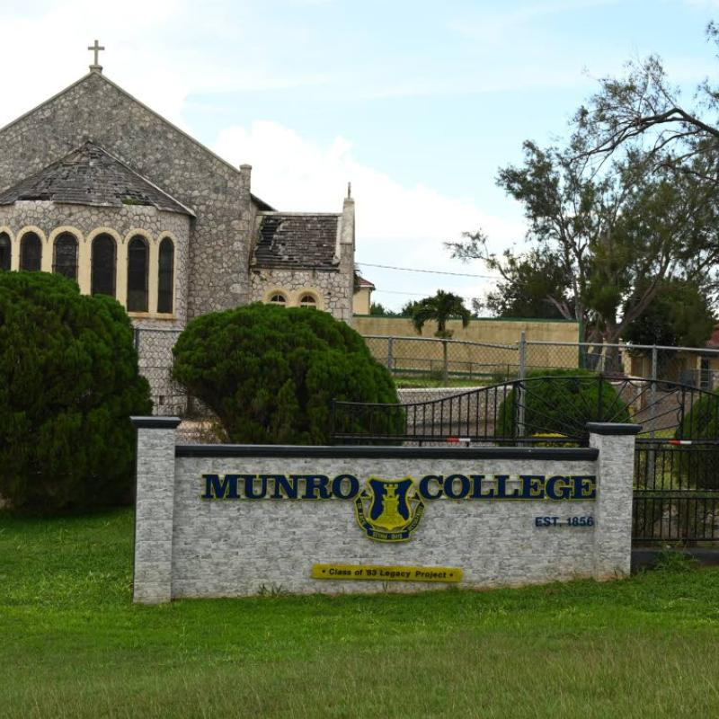
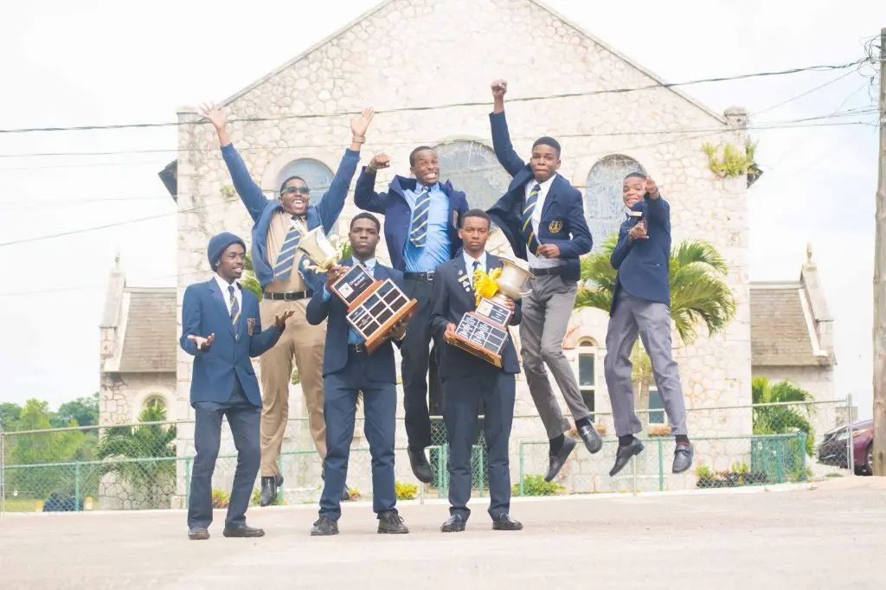
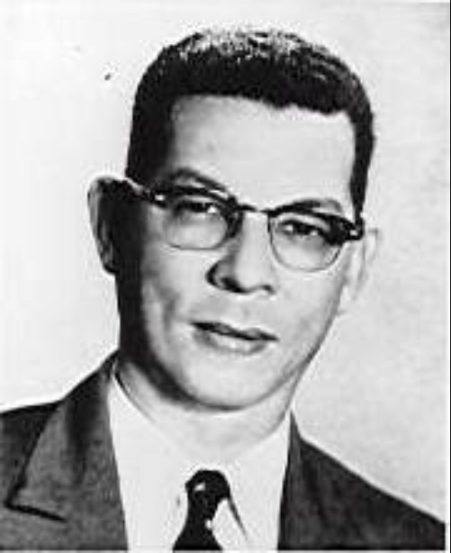
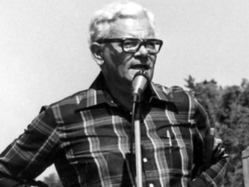

HISTORY
Munro College is a All boys boarding school founded in ST Elizabeth,Jamaica in 1856.
Originally called Postdam School and established as a free school for poor boys in ST Elizabeth by plantation
owners Robert Hugh Munro and Caleb Dickenson and was renamed during WW1.Munro College is jamaicas only all boys
boarding school.

Alumini
The school’s alumni are diverse and include many prominent persons in Jamaican society, with former Prime Minister
Donald Sangster being one of the most notable. Other respected past students include former Ministers of Health:
Kenneth McNeill, Herbert Eldemire, and Douglas Manley (brother to former Prime Minister Michael Manley) and former
Minister of Education Burchell Whiteman. Oraine Barrett, Morris Cargill, John Cyril Emerson Swaby and D. Basil Waite,
former Opposition Spokesperson on Education, are also graduates of Munro College. Famous journalist Lindy Delapenha, O.J.,
Dr Derrick McKoy, lawyer and former Contractor-General and Judge Ira DeCordova Rowe add to the rich lineup of well-respected
men to have walked the halls of Munro College. Current Minister of State of Education Floyd Green; and Oje Ken Ollivierre, popularly
known as Protoje, a contemporary reggae singer and songwriter from Jamaica, are also notable alumni



Our Mission
To develop young men of sterling character who display excellence in academic, social,
emotional, physical, spiritual, moral and co-curricular activities in a safe, caring and
disciplined environment that will enable them to graduate with the requisite knowledge,
skills and attitudes to succeed in a global economy.
Our Vision
To provide an enviable and enriching learning environment that facilitates the successful
development of intelligent and disciplined students who can attain the highest levels of
achievement in their educational and social pursuits as contributing members of the society
through the commitment of a well-trained staff and supportive Board and parents.
ACCOMPLISHMENTS
Several of our distinguished alumni have gone on to become national leaders, accomplished professionals,
and celebrated Rhodes Scholars who continue to make meaningful contributions to Jamaica and the global community.Our 2017 victory in the Schools' Challenge Quiz demonstrated our intellectual prowess on a national stage,
Our continued strong performance at the ISSA Boys and Girls Championships showcases our athletic excellence.
ACADEMICS
TEACHER/SUBJECT DIRECTORY
SCIENCES
Biology : Ms L Philliphs
Chemistry : Mr J Williams
Human and Social Biology : Mrs O Jamison-Mills
Social Biology : Mr F Payne
Agricultural Science : Mr L Rosa
MATHEMATICS AND TECHNOLOGY
Mathematics : Mrs D Burton-Blair
Information Technology : Mrs Blair Ethan
Industrial Technology : Mrs F Rosa
Building and Furniture Technology : Mr W Emerson
Auto Mechanics : Mr J Cooley
Languages and Communication
English Language : Mrs L Pace
Communication Studies : Mr M Hansen
English Literature : Mrs S Bass
Business
Principles of Accounts : Ms B French
Principals of Business : Ms Z French
Economics : Mrs M Melton
Humanities and Social Sciences
History : Mrs L Gilliam
Social Studies : Mrs M Woods
Religious Education : Mr C Fisher
Geography : Mr C Adams
Creative Arts
Music : Mr S Bruce
Visual Arts : Ms S Noble